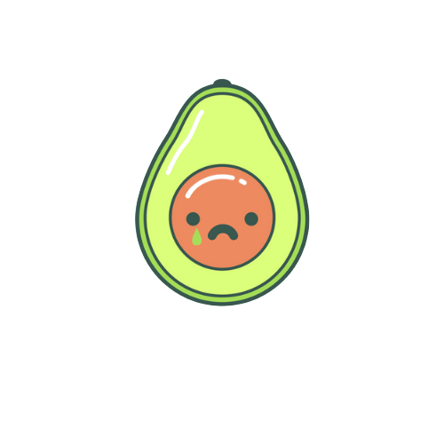

<div class="container contenedor">

    <h1>
        Upps la página no fue encontrada.
    </h1>
    <h5>Parece que la página no existe o no se encuentra disponible, y por ello nuestro aguacate está triste.</h5>
    
    <br>
    <button [routerLink]="'/'">Volver al inicio</button>
</div>